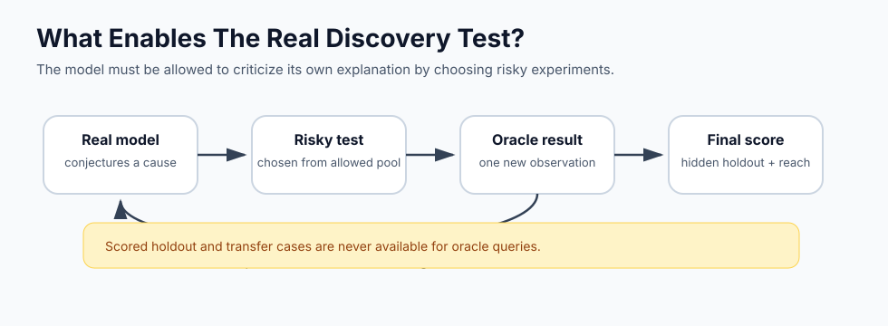

Interactive Walkthrough
The loop we need next

The important upgrade is letting the real model ask for risky tests from the experimentable pool before it predicts hidden holdout and transfer cases. On the first small seed, the loop successfully requested three oracle tests, but did not outperform the one-shot run. That is why multi-seed evaluation is next.
Try it locally
export GEMINI_API_KEY="your-key"
python3 -m deutsch_ai_discovery.real_loop --provider gemini --seed 17 --rounds 3 --opaque-public